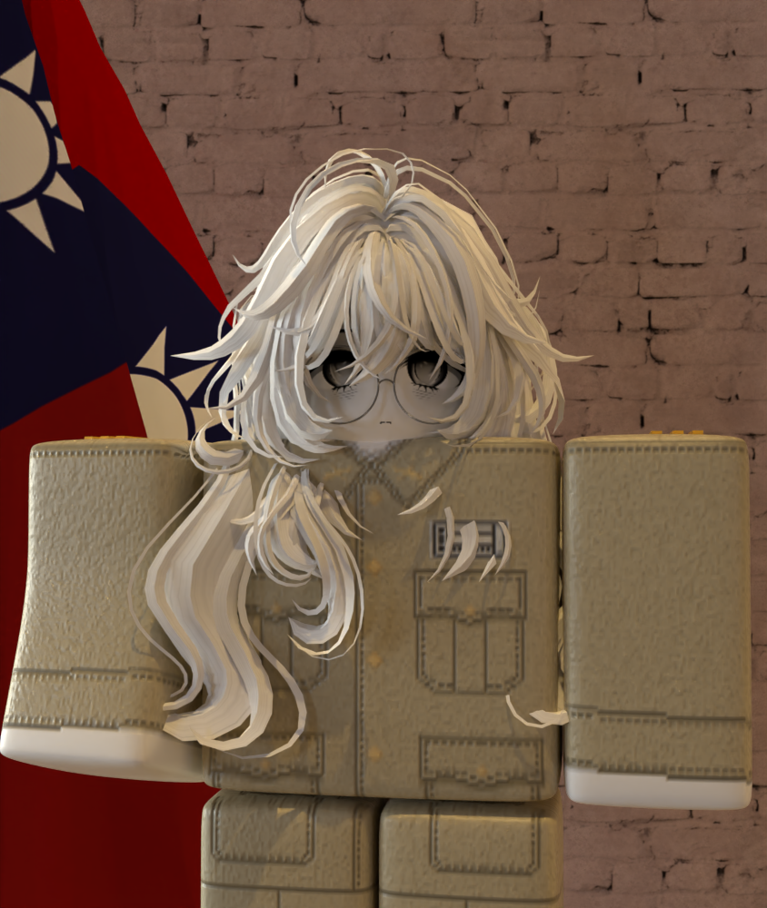

幹部名冊
陸軍裝甲步兵第七十二師 各級主要幹部名冊
中將
師長
XxLanBertxX
統籌第七十二師全體防務、戰術部署與部隊日常演訓。
查看完整檔案 →
少將
副師長
FamilyTiki
協助師長掌理師部幕僚作業、勤務支援與後勤補給。
查看完整檔案 →
N/A
參謀長
N/A
協助師長掌理師部幕僚作業、勤務支援與後勤補給。
查看完整檔案 →
少校
作戰處處長
game98082403
掌理領導與指導作戰處全般工作之責，全面掌握師級作戰中樞之運作方向。
查看完整檔案 →
上尉
作戰處副處長
HotDropPotato
協助處長掌理領導與指導作戰處全般工作之責，全面掌握師級作戰中樞之運作方向。
查看完整檔案 →
N/A
訓練科科長
N/A
協助師長掌理師部幕僚作業、勤務支援與後勤補給。
查看完整檔案 →
N/A
訓練科副科長
N/A
協助師長掌理師部幕僚作業、勤務支援與後勤補給。
查看完整檔案 →

上尉裝甲步兵營 營長
DDPOU
掌理裝甲步兵營戰爭、勤務支援與後勤補給。
查看完整檔案 →
中尉
裝甲步兵營 副營長
Kfuyttffyu
協助營長掌理裝甲步兵營戰爭、勤務支援與後勤補給。
查看完整檔案 →
上尉
重型戰車營 營長
okiwer_TW
掌理重型戰車營戰爭、勤務支援與後勤補給。
查看完整檔案 →
N/A
重型戰車營 副營長
N/A
協助營長掌理重型戰車營戰爭、勤務支援與後勤補給。
查看完整檔案 →
上尉
戰車殲擊營 營長
njkdsvn
掌理戰車殲擊營戰爭、勤務支援與後勤補給。
查看完整檔案 →
N/A
戰車殲擊營 副營長
N/A
協助營長掌理戰車殲擊營戰爭、勤務支援與後勤補給。
查看完整檔案 →